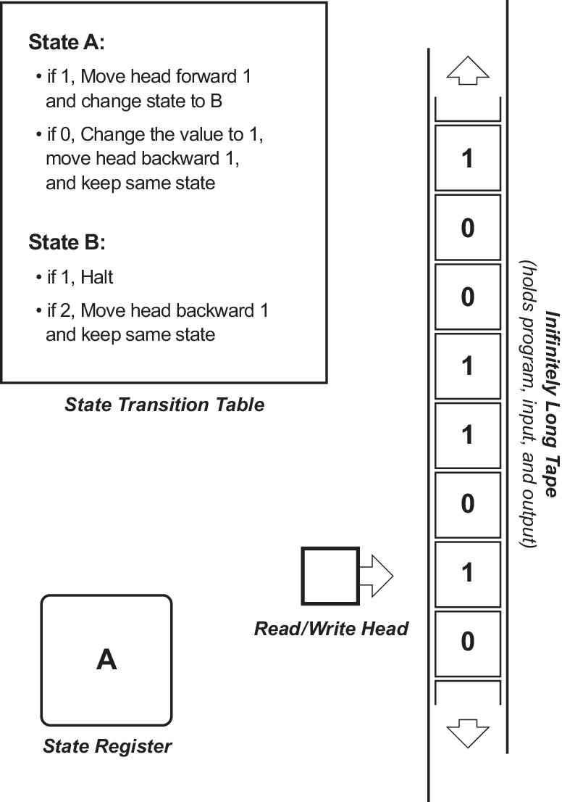

Η Μηχανή του Τούρινγκ
Τι είναι μια μηχανή Τούρινγκ;
Η Μηχανή Τούρινγκ είναι μια υποθετική συσκευή η οποία χειρίζεται σύμβολα σύμφωνα με ένα σύνολο κανόνων. Παρά την απλότητά της, μια τέτοια μηχανή μπορεί να προσαρμοστεί ώστε να προσομοιώνει την λογική οποιουδήποτε αλγορίθμου, και είναι ιδιαίτερα χρήσιμη στο να εξηγεί τις λειτουργίες μιας κεντρικής μονάδας επεξεργασίας στο εσωτερικό του υπολογιστή.
Πιο συγκεκριμένα
Mια Μηχανή Τούρινγκ αποτελείται από:
- Μία ταινία που χωρίζεται σε κελιά, το ένα δίπλα στο άλλο. Κάθε κελί περιέχει ένα σύμβολο από ένα πεπερασμένο αλφάβητο.
- Μία κεφαλή που μπορεί να διαβάζει και να γράφει σύμβολα πάνω στην ταινία και που μπορεί να μετακινεί την ταινία κατά ένα (και μόνο ένα) κελί κάθε φορά. Σε μερικά μοντέλα κινείται μόνο η κεφαλή, ενώ η ταινία παραμένει σταθερή.
- Ένα μητρώο καταστάσεων που αποθηκεύει μία κατάσταση της Μηχανής Τουρινγκ, μία από ένα πεπερασμένο πλήθος. Ανάμεσα σε αυτές είναι η ειδική αρχική κατάσταση με την οποία ξεκινά το μητρώο. Αυτές οι καταστάσεις, γράφει ο Τούρινγκ, αντικαθιστούν την "πνευματική κατάσταση" στην οποία αρχικά θα ήταν το άτομο που θα έκανε τους υπολογισμούς.
- Ένας πεπερασμένος πίνακας από οδηγίες όπου, δεδομένης της κατάστασης στην όποια βρίσκεται αυτή τη στιγμή η μηχανή, και το σύμβολο που διαβάζεται στην ταινία (το σύμβολο που βρίσκεται εκείνη τη στιγμή κάτω από την κεφαλή) ορίζει στη μηχανή να κάνει καποια λειτουργία(απαλειφή,καταγραφή ή/και μετακίνηση κεφαλής)
